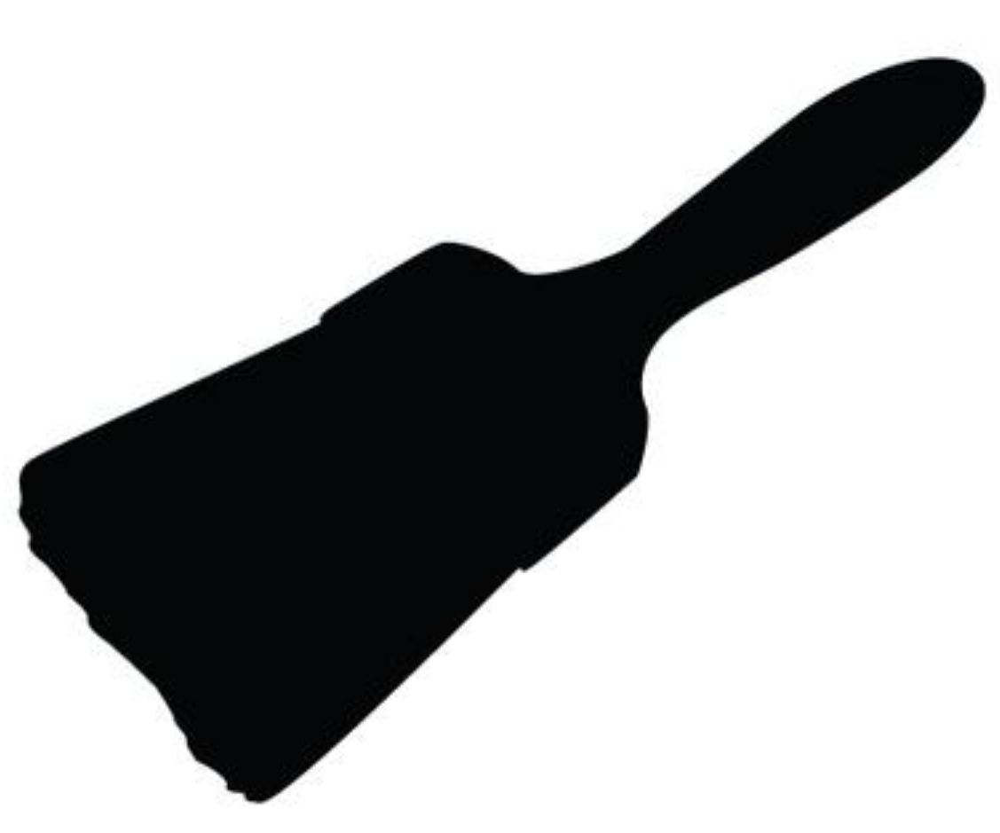
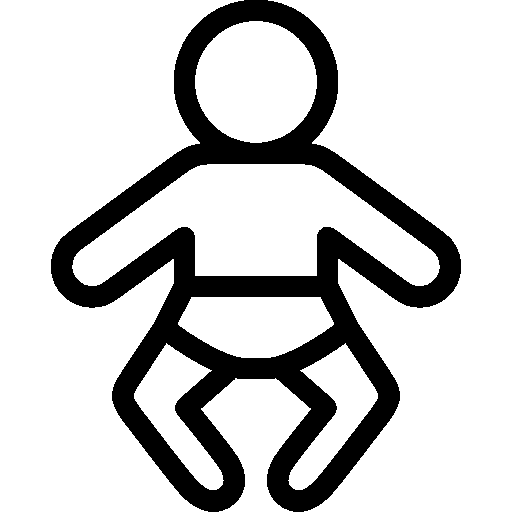

Anyone can be a successful artist if they just put the time and effort into it. There is no such thing as talent, only hard work.What changed my mind: Art school. There were quite a few people that tried hard, but just weren't able to achieve professional level art.

Smart phones. I thought they'd be a fad and that phones with buttons would be around for ever. But, I was wrong.
I used to believe that the lady who burned herself with McDonald's coffee deserved every bit of her pain. Then I learned the truth of the lawsuit by reading up on it, and did a complete 180°.
I used to think that being cynical/negative was realistic and somehow smarter than being positive. I've since realized that a "be prepared for the worst but expect the best" is far better. We can't control the outcome of anything in life. Being negative makes you miserable rather than protected from bad things happening.
I could go through life and could seek meaningful advice from my Dad who has always been there for me.
Now he has been reduced to a feeble condition, I am starting to understand I'm out there on my own, and even what he's sure of is suspect given his mental and physical facilities have been rapidly deteriorating in his late seventies. I feel horrible that I have noticed this long before he did - or at least admitted as much.
That the catholic church was responsible for all of the hateful people in it, I did a CMV on the topic and someone explained it very nicely to me. Basically, the hateful people use the church as an excuse, if you remove the church they will gladly find another excuse.

I used to be a strict, hardline atheist. I was the kind of bastard that would bring the subject up for no reason, just to argue. I don't know what the hell my problem was. Now I feel like, the universe is big, I don't know what all might be out there, I don't really care. I live as if there is no afterlife, because that makes sense to me. But if you don't, and you believe in one, that's perfectly fine, and maybe you're right. Who knows?
I was once completely against religion as a whole.
Then I watched Jesus Christ Superstar.
I used to be extremely anti-abortion. My mom would take me to pro-life rallies and protests, and I even wore shirts that said "abortion is murder". As I got older and lost religion I realized that abortion is absolutely necessary. Then I got pregnant and had a kid. It solidified things for me. No one should be forced to go through pregnancy and motherhood if they don't want to.

I used to be a conspiracy theorist. Believed that 9/11 was committed by the US government and that we never landed on the moon.
Once I started looking outside of the echo chamber I was in and started looking at alternate exlanations, theories and listening to different viewpoints I soon realised how ridicuous those notions were.
I used to think people on welfare and state assistance just weren't trying hard enough. I grew up spoiled and entitled and it seemed like any kind of charity was a stigma.
Then, my husband became chronically ill, and the economy took a shit. My family has been close to homelessness more than once, and have relied on state insurance and assistance off and on throughout the past few years. There are definitely people out there who abuse the system, but some just get stuck in a horrible cycle of poverty.
"All taxation is theft, man! I made my money without any help from public institutions or the infrastructure they support, I should be able to keep every last dime of it!"
Naturally that was when I was 18, living at home rent free, and working at Pizza Hut as a delivery driver who relied upon public roads for pretty much every cent I made.